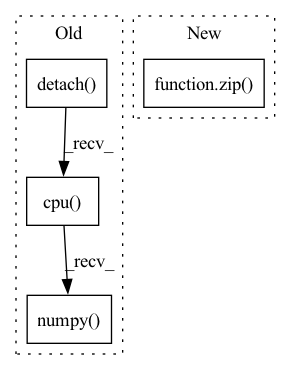

Pattern ID :10080
Before Change
def plot(X, y):
data = X.detach().cpu().numpy()
labels = y.detach().cpu().numpy()
plt.scatter(data[:, 0], data[:, 1], c=labels, cmap=plt.cm.Spectral)
plt.grid(True)
plt.show()
After Change
def plot(Xs, y, labels):
fig, axes = plt.subplots(1, 2)
for ax, X, lab in zip( axes, Xs, labels) :
ax.scatter(X[:, 0], X[:, 1], c=y, cmap=plt.cm.Spectral)
ax.title.set_text(lab)
plt.grid(True)In pattern: SUPERPATTERN
Frequency: 4
Non-data size: 4
Instances Fragment ID: 35819312
Project Name: kevinzakka/torchnca
Commit Name: 64ff0614367fa314709c05e3491470a41937d3d0
Time: 2020-01-27
Author: kevinarmandzakka@gmail.com
File Name: main.py
M Class Name: AnonimousClass
N Class Name: AnonimousClass
M Method Name: plot(3)
N Method Name: plot(2)
M Parent Class:
N Parent Class:
M File Name: main.py
N File Name: main.py
M Start Line: 43
M End Line: 45
N Start Line: 41
N End Line: 46
Before Change
batch_size, seq_len, vocab_size = logits.size()
mask_positions_after_reshaped = []
for batch, mask_pos in enumerate(mask_positions.detach().cpu().numpy() .tolist()):
for pos in mask_pos:
mask_positions_after_reshaped.append(batch * seq_len + pos)
After Change
batch_size, seq_len, vocab_size = logits.size()
loss = None
for single_logits, single_sub_mask_labels, single_mask_positions in zip( logits, sub_mask_labels, mask_positions) :
single_mask_logits = single_logits[single_mask_positions] // (mask_label_num, vocab_size)
single_mask_logits = single_mask_logits.repeat(len(single_sub_mask_labels), 1, 1) // (sub_label_num, mask_label_num, vocab_size)
single_mask_logits = single_mask_logits.reshape(-1, vocab_size) // (sub_label_num * mask_label_num, vocab_size) Fragment ID: 35819310
Project Name: harderthenharder/transformers_tasks
Commit Name: bf825bb22c43795f1e3a08cf8969ddc613051e76
Time: 2022-11-30
Author: pankeyu@pankeyus-MacBook-Pro.local
File Name: prompt_tasks/p-tuning/utils.py
M Class Name: AnonimousClass
N Class Name: AnonimousClass
M Method Name: mlm_loss(6)
N Method Name: mlm_loss(6)
M Parent Class:
N Parent Class:
M File Name: prompt_tasks/p-tuning/utils.py
N File Name: prompt_tasks/p-tuning/utils.py
M Start Line: 204
M End Line: 212
N Start Line: 190
N End Line: 203
Before Change
// create zipper list of pred-target numpy array pairs, removing other dimensions
pred = pred.view(-1, *pred.shape[2:])
pred = list(pred.detach().cpu().numpy() )
target = target.view(-1, *target.shape[2:])
target = list(target.detach().cpu().numpy())
After Change
"ssim": np.mean(np.stack([SSIM(p, t) for p, t in zip(pred_numpy, target_numpy)]), axis=0),
"psnr": np.mean(np.stack([PSNR(p, t) for p, t in zip(pred_numpy, target_numpy)]), axis=0),
"mse": np.mean(np.stack([MSE(p, t) for p, t in zip(pred_numpy, target_numpy)]), axis=0),
"lpips": torch.mean(torch.stack([LPIPS(p, t) for p, t in zip( pred_torch, target_torch) ]), axis=0).item(),
}
if __name__ == "__main__": Fragment ID: 35819311
Project Name: ais-bonn/vp-suite
Commit Name: 8c3311e7ff430cc81818f49f3c7f45fe2845c8fb
Time: 2021-09-14
Author: boltres@ais.uni-bonn.de
File Name: metrics/image_metrics.py
M Class Name: AnonimousClass
N Class Name: AnonimousClass
M Method Name: get_image_metrics(2)
N Method Name: get_image_metrics(2)
M Parent Class:
N Parent Class:
M File Name: metrics/image_metrics.py
N File Name: metrics/image_metrics.py
M Start Line: 32
M End Line: 40
N Start Line: 39
N End Line: 48
Before Change
fig, axes = plt.subplots(len(traces_to_show) + 1, 1, figsize=(15, 8))
else:
assert len(axes) == len(traces_to_show) + 1, f"axes must have length {len(traces_to_show) + 1}"
axes[0].plot(errors.detach().cpu().numpy() )
axes[0].set_xlabel("Time [-]")
axes[0].set_ylabel("Squared Error [-]")
axes[0].set_title(title)After Change
given_names = kwargs.get("traces_to_show_names", [traces_to_names[t] for t in traces_to_show])
assert len(given_names) == len(traces_to_show), "traces_to_show_names must have the same length as traces_to_show"
for trace, trace_name in zip( traces_to_show, given_names) :
traces_to_names[trace] = trace_name
if plot_error_quad:
traces_to_show.remove("error_quad") Fragment ID: 35819308
Project Name: neurotorch/neurotorch
Commit Name: 53f1424222bf470ccfed91290df8c9e1ac3e616b
Time: 2022-11-11
Author: 50332514+JeremieGince@users.noreply.github.com
File Name: src/neurotorch/visualisation/time_series_visualisation.py
M Class Name: Visualise
N Class Name: Visualise
M Method Name: plot_timeseries_comparison(10)
N Method Name: plot_timeseries_comparison(10)
M Parent Class:
N Parent Class:
M File Name: src/neurotorch/visualisation/time_series_visualisation.py
N File Name: src/neurotorch/visualisation/time_series_visualisation.py
M Start Line: 411
M End Line: 467
N Start Line: 412
N End Line: 481